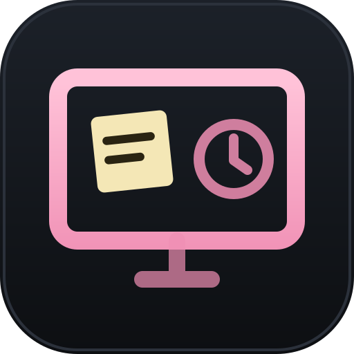

ホテル、空港、機内のために作りました
すべてがこのルーターの中で動きます。端末はあなた専用のネットワークにつなぐだけ。あとはルーターにお任せください。
ログインは全員で1回
ホテルの利用規約ページで誰か1人が同意すれば、スマホもノートPCもタブレットも全部つながります。端末ごとの課金は不要です。
自動で再接続
一度つないだネットワークを覚えていて、自動でつなぎ直します。部屋の有線 LAN ケーブルを挿せば、そちらを優先します。
ネットなしで使えるアプリ
ホットスポット上で友だちとカードゲーム、旅のクイズ、テキストアドベンチャー、映画、ファイル共有、オフライン版 Wikivoyage、そしてルーターに内蔵された言語モデル。
自宅の VPN
WireGuard の設定を貼り付ければ、すべての通信がそこを通ります。ホテルから見えるのは暗号化された通信だけです。
端末とデータ使用量
誰が接続しているか、ネットワークごとにどれだけデータを使ったかがわかります。一晩中動画を流しているタブレットは一時停止できます。
最小権限
管理画面は、Wi-Fi 設定だけに権限を絞ったログインでルーターを操作します。root は使いません。
開封からホットスポットまで約30分
お使いのルーターを選んでください。終わったステップにチェックを入れていけば、このページが進み具合を覚えています。
-
部品をそろえる
NanoPi R6S, 8 GB 本体です。メタルケース付きを選んでください。ケースがヒートシンクを兼ねています。 USB Wi-Fi アダプター × 2 R6S には Wi-Fi がありません。MediaTek 製に限ります。例：ホットスポット用に ALFA AWUS036ACM（MT7612U）、ホテルのネットワーク用に AWUS036ACHM（MT7610U）。 5 V / 3 A の USB-C 電源 または USB-C PD 対応のモバイルバッテリー。 microSD カード（8 GB 以上） 書き込みに1回使うだけです。 短い USB 延長ケーブル 任意。アダプターの1つをケースから離せます。 -
FriendlyWrt を eMMC に書き込む
FriendlyWrt は FriendlyElec 版の OpenWrt で、Docker が組み込まれています。
- FriendlyElec のダウンロードページを開き、
01_Official images→02_SD-to-eMMC imagesと進んで、rk3588-eflasher-friendlywrt-…-docker-….img.gzのような名前のファイルをダウンロードします。名前にdockerが入っているものを選んでください。 - balenaEtcher で microSD カードに書き込みます（
.gzのままで大丈夫です）。Windows では FriendlyElec 推奨のツールは Win32 Disk Imager です。その場合は先にイメージを解凍してください。 - カードを R6S に挿して電源を入れると、自動で eMMC にインストールされます。赤い SYS ランプを見てください：
速い点滅インストール中。数分かかります ゆっくり点滅 + 緑完了：SYS がゆっくり点滅し、WAN/LAN ランプが点灯したまま- 電源を抜いてカードを取り出し、もう一度電源を入れます。これで eMMC から起動します。
- FriendlyElec のダウンロードページを開き、
-
一度ログインしてネットにつなぐ
- ノートPCを LAN と書かれたポートに、自宅のルーターからのケーブルを WAN と書かれたポートにつなぎます。
- http://192.168.2.1 を開きます。ユーザー名
root、パスワードpasswordでログインします（バージョンによってはパスワードは空欄）。 - 自分用の root パスワードを設定します：System → Administration。このパスワードはあなただけのもので、AirplaneMode には権限を絞った専用のログインが作られます。
-
Wi-Fi アダプターを挿す
ホットスポット用のアダプター（AWUS036ACM）を青い USB 3.0 ポートに、もう1つを USB 2.0 ポートに挿します。LuCI の Network → Wireless に無線が2つ表示されるはずです。設定は不要です。管理画面がやってくれます。
-
インストーラーを実行する
ターミナルを開き（Windows なら PowerShell、Mac なら「ターミナル」）、
ssh root@192.168.2.1で接続してから、下のコマンドを貼り付けます。ルーターをチェックしてすべてをインストールし（約 3.8 GB）、最後に管理者パスワードを表示します。 -
ホットスポットに名前をつける
http://airplane.mode:8080/admin/ を開き、インストーラーが表示したパスワードでログインして、ホットスポットの名前とパスワードを決めます。以後、どこへ行っても端末が自動でつながります。
-
モデルを確認する
arm64 の GL.iNet（たとえば Flint 2 / GL-MT6000）で、RAM 1 GB のものが必要です。さらに Docker 用に 8 GB 以上の USB メモリか SD カードを用意してください。古い MIPS モデルでは動きません。
-
ネットにつないでシェルを開く
ルーターの管理画面（http://192.168.8.1）でインターネットに接続します。次にターミナルから
ssh root@192.168.8.1を実行し、管理画面と同じパスワードでログインします。 -
Docker をインストールする
USB か SD のストレージをマウントしてから（GL.iNet 管理画面 → Applications → Network Storage）、次を実行します：
# opkg update && opkg install dockerd docker docker-composeDocker のデータの保存先を USB/SD ストレージにして（
data_root、場所は/etc/config/dockerd）、/etc/init.d/dockerd restartで起動します。パッケージ名はファームウェアのバージョンによって異なる場合があります。 -
インストーラーを実行する
同じシェルに下のコマンドを貼り付けます。ルーターをチェックしてすべてをインストールし、最後に管理者パスワードを表示します。
-
ホットスポットに名前をつけ、リピーターは1つだけ使う
http://airplane.mode:8080/admin/ を開いてログインします。GL.iNet には上流の Wi-Fi も変更する独自のリピーター画面があるので、それか AirplaneMode の Internet source パネルのどちらか一方だけを使ってください。
高度1万メートルの過ごし方
今のところアプリは11個。それぞれが独立したオープンソースプロジェクトで、コンテナとして組み込まれます。
The Dark Light
内蔵の言語モデルが語るテキストアドベンチャー。1人でも、みんなのスマホでパーティーを組んでも遊べます。舞台は闇に沈んだ灯台、凍てつく峠、霧に包まれた湿地。
ゲーム · 言語モデルを使用（GL.iNet では使えません）Gate Change
色と数字のスピーディーなカードゲーム。2〜8人で遊べます。ホットスポットで友だちとそれぞれのスマホから対戦するか、ボットと対戦。
ゲームPassport
旅がテーマのデッキ構築型カードゲーム。ホットスポットで友だちやボットと競いながら、スタンプやビザを集めます。
ゲームWayfarer
Travel Guide をもとにした旅のクイズ。首都、通貨、空港コード、フレーズ。デイリーフライト、エンドレスモード、ハイスコア。
ゲームDoom
名作シューティングを、タッチ操作でそのまま端末上でプレイ。Freedoom、空港が舞台のエピソード Layover、または Drop から読み込んだ自分の WAD で遊べます。
ゲームCinema
Drop に入れた映画やドラマを観たり、音楽を聴いたり。どの端末でも続きから再生できます。
エンターテインメントQuickShot
Drop の QuickShot フォルダーに入れたショート動画をひたすら流すフィード。スワイプ、いいね、コメント。
エンターテインメントThe Couch
セラピストシミュレーター。優しい「共感タイプ」から茶目っ気たっぷりの「ナルシスト」まで、6人のセラピストの誰かとじっくり話せます。演じるのは内蔵の言語モデル。本物のセラピーではありません。
エンターテインメント · 言語モデルを使用（GL.iNet では使えません）Travel Guide
Wikivoyage の全記事をオフラインで。行き先を調べたり、質問してガイドの内容から答えを得たりできます。
旅行 · 言語モデルを使用（GL.iNet では使えません）Drop
ホットスポット上のスマホ、タブレット、ノートPCの間でファイルやメモをやりとり。機内で観る映画も保存しておけます。
ツール
TV Board
部屋のための画面：誰がいるか、スマホから投稿したメモや予約、そして Drop の TV フォルダーにある写真のスライドショー。
ツール